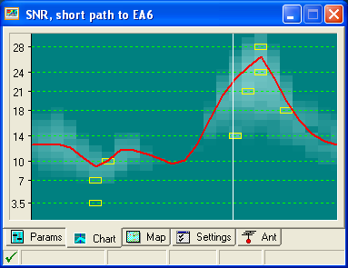

For an example, I just worked EA6UN on 15m CW (21031.8 simplex) and here is the current chart to EA6 from Ham Cap. The white line is the current time. Note that we are just entering the 21 MHz window for EA6. 73, - Craig, AE6RR  -----Original Message----- On Nov 5, 2012, at 7:16 AM, Syl Heumann wrote: > I find propagation predictions close to worthless. > > syl I think that's giving them too much credit. They're completely worthless. It always amazes me how much effort people put into these things, but you never get a "post mortem", saying that the predictions were "spot on" or not, and whether the prediction somehow helped the contest operation or DXpedition. In practice, I can see what the propagation is in minutes, if not seconds, in real-time. If you are cluster connected, collect all of the spots around the world from you location (and skimmers are great for this), then display them on a map. (My logging software does this automatically.) You can see exactly which bands are open to which places. The only really practical use I can think of is if a DXpedition is trying to decide whether to bring equipment and antennas for 6m, or some other "iffy" band, but you don't need a supercomputer to determine this. "Prediction is very difficult. Especially about the future." Niels Bohr (or perhaps Yogi Berra, I get those two confused) Rich KE1B _______________________________________________ Chat mailing list http://mail.ncdxc.org/mailman/listinfo/chat_ncdxc.org Received from the Reply-to-List version of Chat. Please send subscription change requests to listadmin@ncdxc.org . |